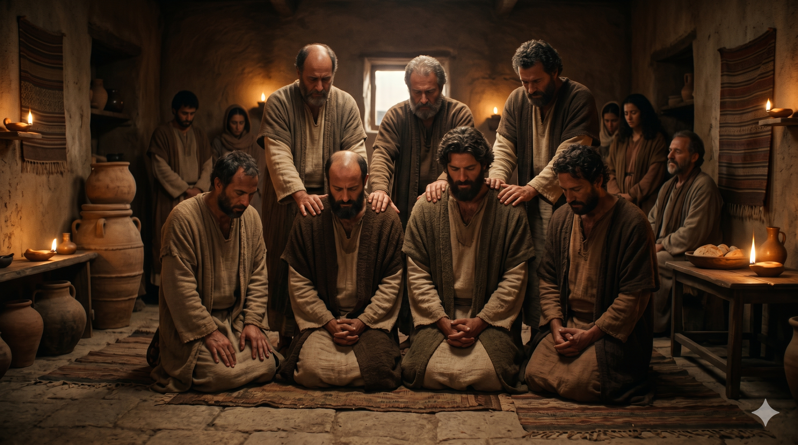

바보 섬 총독 서기오 바울의 법정에서 엘루마 마술사와 정면으로 맞서 선 사도 바울, 성령의 권능으로 손을 뻗는 장면.
바울이라고 하는 사울이 성령이 충만하여 그를 주목하고 이르되 모든 거짓과 악행이 가득한 자요 마귀의 자식이요 모든 의의 원수여 주의 바른 길을 굽게 하기를 그치지 아니하겠느냐 보라 이제 주의 손이 네 위에 있으니 네가 맹인이 되어 얼마 동안 해를 보지 못하리라 하니 즉시 안개와 어둠이 그를 덮어 인도할 사람을 두루 구하는지라. — 사도행전 13:9-11
안디옥 교회는 금식하며 기도하는 중에 성령의 음성을 들었습니다 — "내가 불러 시키는 일을 위하여 바나바와 사울을 따로 세우라." 이것이 교회 역사상 최초의 조직적인 선교 파송이었습니다. 바울과 바나바는 구브로 섬으로 건너가 복음을 전하다가 바보에서 총독 서기오 바울을 만납니다. 총독은 지혜 있는 사람으로 하나님의 말씀을 듣고 싶어했습니다. 그러나 그 자리에는 바예수라 불리는 유대인 거짓 선지자이자 마술사 엘루마가 있었고, 그는 총독이 믿음에 이르지 못하도록 방해하고 있었습니다.
이 순간 사도행전은 처음으로 "사울"이 아닌 "바울"이라는 이름을 사용합니다. 성령이 충만한 바울은 엘루마를 주목하고 담대하게 선언합니다 — "모든 거짓과 악행이 가득한 자요 마귀의 자식이요 모든 의의 원수여." 그리고 즉시 하나님의 심판이 임하여 엘루마는 맹인이 됩니다. 이 사건은 단순한 기적이 아니었습니다. 진리를 가로막는 세력에 맞서 복음이 어떤 권능을 가지는지를 드러내는 선교의 첫 번째 대결이었습니다. 총독은 이 일을 보고 믿었으며, 주의 가르침에 놀랐습니다.

안디옥 교회에서 금식하며 기도하는 중에 성령의 부름을 받아 파송되는 바울과 바나바의 모습, 장로들이 손을 얹어 안수하는 장면.
복음이 선포되는 곳에는 반드시 방해가 있습니다. 엘루마처럼 진리를 굽게 하려는 세력은 언제나 존재합니다. 중요한 것은 그 앞에서 우리가 어떻게 서느냐입니다. 바울은 두려워하거나 타협하지 않았습니다. 성령이 충만한 상태에서, 그는 분명하게 악을 악이라 부르고, 하나님의 심판을 선포했습니다. 이것은 무모한 용기가 아닙니다. 성령으로 충만할 때 우리는 비로소 무엇이 진짜 위협이고 무엇이 하나님의 뜻인지를 선명하게 볼 수 있게 됩니다.
또한 이 본문은 선교의 출발이 기도와 공동체에 있음을 가르칩니다. 바울이 혼자 떠난 것이 아니라, 안디옥 교회가 금식과 기도 가운데 성령의 음성을 들은 후에 함께 파송했습니다. 우리가 하나님의 일을 할 때, 혼자의 결심보다 공동체의 기도와 파송이 그 사역의 기초가 되어야 합니다. 내가 가는 것이 아니라 교회가 함께 보내는 것, 그것이 바른 선교의 출발입니다.
진리를 가로막는 것 앞에서 침묵하지 마십시오.
성령이 충만하면 무엇이 하나님의 뜻인지 분명히 보입니다.
기도로 파송받고, 담대하게 나아가십시오.